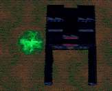
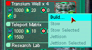
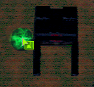

| From the overhead view move around the camp. You can useing your directional keys, or you can simply move your mouse to the edge of the screeen. Also, if you hold down the Tilde (~) key, you can use the mouse to zoom in/out, and rotate the camera. Now locate a green patch on the playfield. This is a Transium hotspot, where the precious resource can be mined. |  |
| Open your building list and expand your Nerve Center to show inventory. Find the "Transium Well" Jitter, and right click on it and select build. |  |
| Again, you get a build cursor and a flashing image of the well. Move that image directly over the hotspot and click to build. |  |
| Note that you can build from this overhead view or from 1st person; each has its advantages. You always start with at least two wells, so find another hotspot and build a second well. If you have more than two wells, build the others also. | |